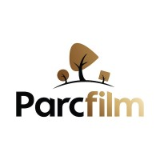

Video Editor
14/03/2023 to 14/03/2024

- I supported the brand of many well established retail companies through commercial and promotional montages acclaimed by producers and consumers alike
- I spared my team any reshoots by ensuring the integrity and availability of data not only on our network-attached storage, but also on archives
- I adapted quickly to the ever changing demands of social media by aligning my editing technique with the current trends and learning new tools that better suit the times
- My adjustment to the client needs and the industry demands ensured a minimum amount of feedback and a quick delivery of products
3D Modeler
10/02/2017 to 10/05/2017
- I was part of the television team for my high school where I got involved in the provision of technical services and also in the decision making
- The technical services consisted in the production of motion graphics like lower thirds and animated intros which were put to use in the newscast
- The decisions consisted in the search and selection of relevant and interesting news for the pupils which were made together with my colleagues